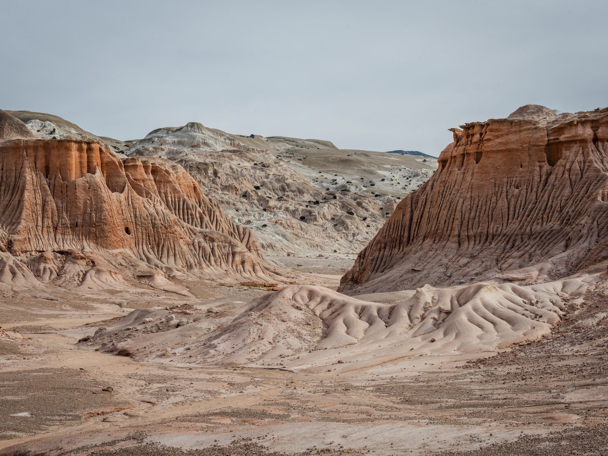

Un cauce que alguna vez transportó agua líquida, hoy convertido en un laberinto de piedra reseca. Las formaciones talladas por el viento dibujan siluetas fantasmales bajo el cielo anaranjado del atardecer marciano.